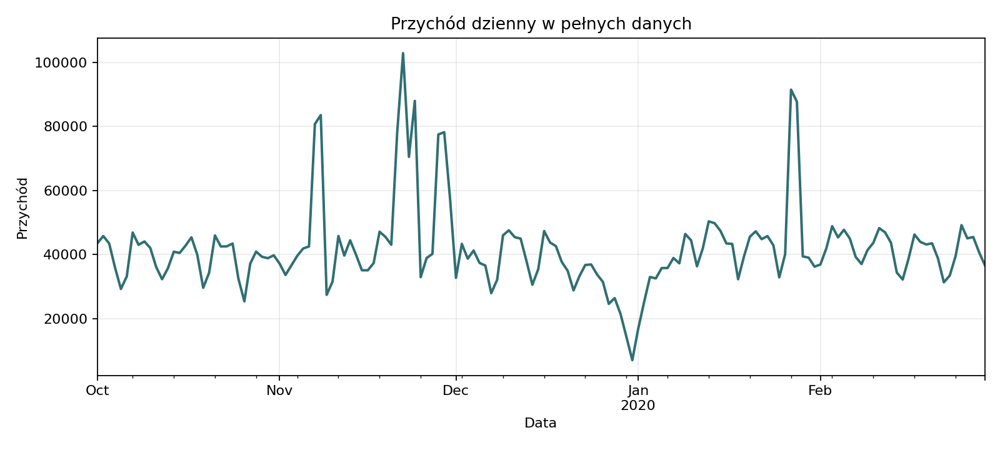

Executive Report
Co wynika z 20,7 mln zdarzeń e-commerce
Executive Summary
- Pozycje zakupowe są małą częścią aktywności. Z 20,7 mln zdarzeń po czyszczeniu mamy 1,29 mln rekordów
purchase, czyli 6,22% wszystkich zdarzeń. - Kupuje niewielka część bazy. W danych pojawia się 1,64 mln użytkowników, ale zakup wykonało 110,5 tys. klientów, czyli 6,74% użytkowników.
- Przychód jest skoncentrowany. Top 10% klientów kupujących odpowiada za 43,0% przychodu, a top 20% za 59,3%.
- Najbardziej sensowne działania to retencja, onboarding i cross-sell. Segmentacja pozwala rozdzielić budżet między klientów wartościowych, nowych, zagrożonych odpływem i okazjonalnych.
Od ruchu do wartości
Punktem wyjścia nie jest sprzedaż, tylko ruch użytkowników. Dopiero filtrowanie zdarzeń do purchase pokazuje, gdzie powstaje wartość. Jeden rekord purchase oznacza pozycję zakupową, więc raport nie utożsamia tej liczby z liczbą zamówień.
| Metryka | Wartość |
|---|---|
| Liczba pozycji zakupowych po czyszczeniu | 1 286 881 |
| Przychód po czyszczeniu | 6351830.29 |
| Średnia wartość pozycji zakupowej | 4.94 |
| Klienci z zakupem | 110 518 |
| Sesje zakupowe | 155 617 |
| Sesje z marką w zakupie | 137 908 |

Wartość skupia się w małej grupie
Najważniejsza decyzja marketingowa dotyczy priorytetów. Jeżeli 11,1 tys. klientów odpowiada za 43,0% przychodu, to szeroka komunikacja do całej bazy nie powinna być jedyną strategią. Ten wynik bezpośrednio wspiera priorytetyzację testów dla klientów wysokowartościowych, ale nie przesądza jeszcze, jaki rabat lub kanał będzie opłacalny.
| Grupa klientów | Klienci | Udział klientów | Przychód | Udział przychodu |
|---|---|---|---|---|
| Top 1% | 1 105 | 1.0 | 710142.28 | 11.18 |
| Top 5% | 5 526 | 5.0 | 1892626.15 | 29.8 |
| Top 10% | 11 052 | 10.0 | 2730964.09 | 42.99 |
| Top 20% | 22 104 | 20.0 | 3767433.2 | 59.31 |
Segmenty wskazują, gdzie inwestować
RFM dzieli klientów według świeżości zakupu, częstotliwości i wartości. Recency jest liczone w dniach od ostatniego zakupu do końca obserwowanego okresu, Frequency jako liczba pozycji zakupowych, a Monetary jako suma wartości price. Segmenty lojalne i wysokowartościowe mają relatywnie mały udział w bazie, ale dużą rolę w przychodzie. Nazwy segmentów należy traktować jako interpretację profili RFM, a nie stałe etykiety modelu.
| Kategoria | Klienci | Udział klientów | Monetary | Udział przychodu |
|---|---|---|---|---|
| Lojalni | 22571 | 20.42 | 121.25 | 43.09 |
| Najlepsi klienci | 4796 | 4.34 | 280.67 | 21.19 |
| Niskowartościowi lub okazjonalni | 70093 | 63.42 | 25.01 | 27.6 |
| Nowi lub niedawni | 8496 | 7.69 | 27.96 | 3.74 |
| Zagrożeni odpływem | 4562 | 4.13 | 60.97 | 4.38 |
Rekomendowane działania
- Chronić top klientów: program VIP, wcześniejszy dostęp, oferty premium.
- Rozwijać klientów lojalnych przez cross-sell i pakiety marek.
- Nowych klientów prowadzić do kolejnego zakupu możliwie szybko po pierwszej pozycji zakupowej lub pierwszej sesji zakupowej.
- Kampanie win-back kierować tylko do segmentów, których historyczna wartość uzasadnia koszt kontaktu.
- Mierzyć efekt nie po kliknięciach, ale po zakupach, przychodzie i retencji.
Dane zawierają ceny pozycji zakupowych, ale nie zawierają kosztów ani marży. Dlatego raport mówi o wartości sprzedaży, nie o zysku.